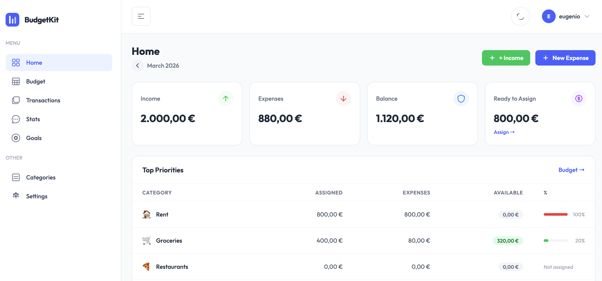

Why I Built My Own Budgeting App Instead of Using YNAB or Notion
April 2026 · Eugenio Giusti

I've tried most of the popular budgeting tools. YNAB is well-designed, but $100/year for a spreadsheet-like app felt hard to justify. Notion is powerful, but I'd spend more time building the template than actually budgeting. And the free-tier apps? They either want to connect to your bank account or show you ads. None of that sat right with me.
So I built BudgetKit — a self-hosted, open source personal finance app that does exactly what I need and nothing more. No subscription. No data sharing. No third-party tracking your spending habits.
The Problem With Existing Tools
Most personal finance apps fall into one of three categories: too expensive, too complicated, or too nosy.
- YNAB is great if you commit to their methodology, but it's pricey for what it is, and it runs entirely on their servers. Your financial data lives in someone else's database.
- Notion is infinitely flexible, which is actually the problem. You spend a weekend building the "perfect" finance tracker, then abandon it by month two because maintaining the template is a side project in itself.
- Free apps like Mint (now defunct) or similar tools tend to monetize by selling aggregated financial data or pushing financial products at you. The product is your data.
I wanted something in between — structured enough to actually use, simple enough to not need a tutorial, and private enough that I'm not worried about who's reading my grocery receipts.
What BudgetKit Does Differently
BudgetKit is built with Laravel and Tailwind CSS. It's designed to be self-hosted — you can run it on a VPS, a Raspberry Pi, or even locally. Your data stays where you put it.
The codebase is fully open source on GitHub, so you can read every line, fork it, contribute to it, or just audit it for yourself. There's no hidden API call to a third-party analytics service. No telemetry. Nothing phoning home.
The design philosophy is simple by default. I didn't try to build Quicken. I built the tool I actually needed: a monthly budget planner with transaction tracking, a savings goal tracker, and a guide to apply the 50/30/20 rule to your income. That's it.
Core Features
- Monthly Budget Planner: Set your income and planned expenses for the month. See at a glance where your money is going and whether you're on track.
- 50/30/20 Rule Guide: BudgetKit helps you split your income into needs (50%), wants (30%), and savings (20%). It's a simple framework that works for most people without requiring a finance degree.
- Transaction Tracking: Log what you spend, tag it by category, and watch the numbers add up — or not. No bank sync required; you enter transactions manually, which honestly makes you more aware of spending.
- Savings Goals: Create goals — emergency fund, holiday, new laptop — and track progress over time. Simple percentages, no projections or gamification.
- Multi-language Support: The app ships with support for multiple languages, so it's usable without needing to patch strings yourself.
Who This Is For
BudgetKit isn't trying to replace every finance tool for every person. It's for people who want a clean, private, no-subscription way to keep track of their money.
If you're a developer comfortable with self-hosting a Laravel app, you can be up and running in under 10 minutes. If you're not a developer, the hosted demo at budgetkit-topaz.vercel.app lets you try it without installing anything.
It's also for people who've grown tired of the privacy tradeoffs that come with "free" financial software. There's something to be said for owning your data — not just in principle, but in practice.
Final Thoughts
I'm not saying YNAB is bad or that Notion doesn't work for budgeting. For some people, they're the right tools. But building BudgetKit taught me that sometimes the right solution is a focused one: a tool that does a few things well and gets out of your way.
If you've been meaning to get your finances in order but keep putting it off because every tool feels like too much overhead — give BudgetKit a try. It's free, it's open, and your data belongs to you.